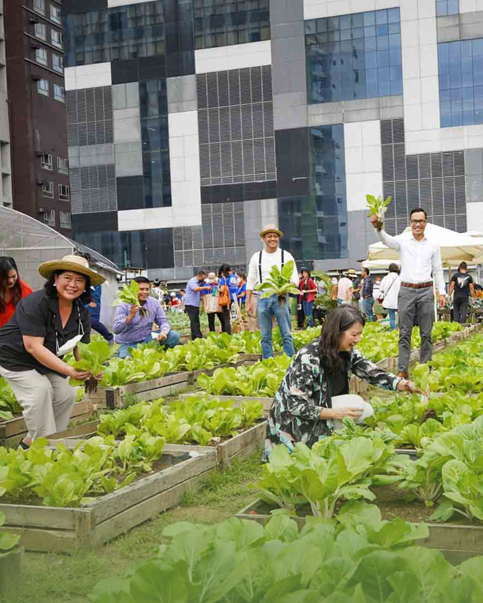
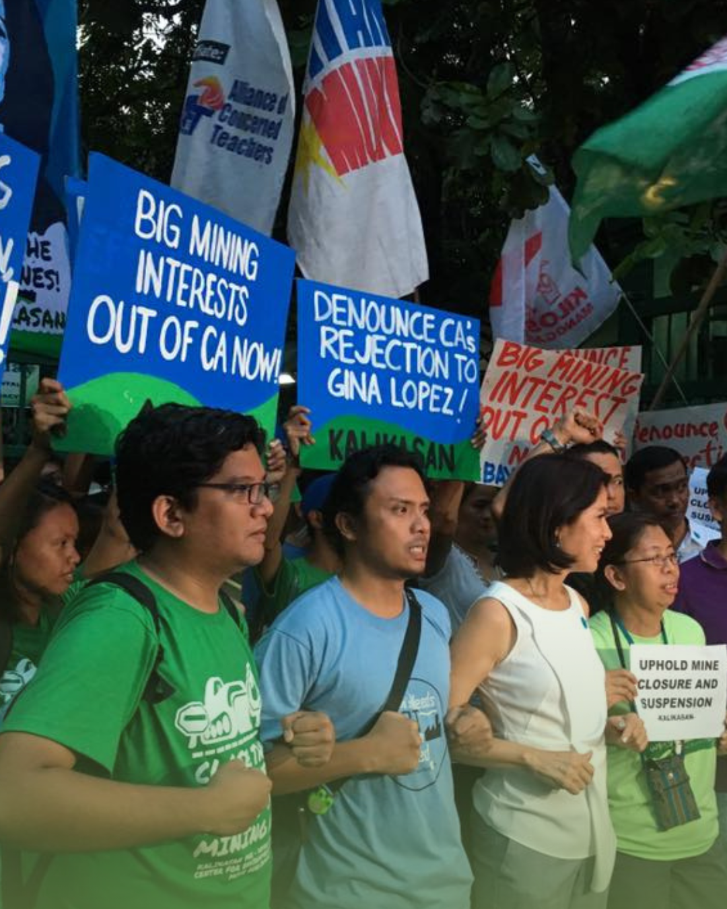
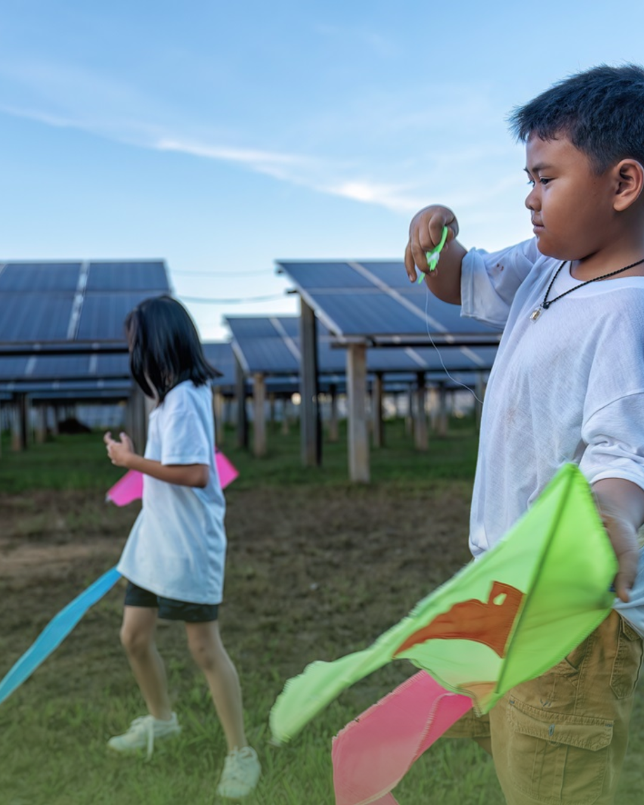

People Taking Action.
  Hover for a better look on the actions communities are taking.
Hover for a better look on the actions communities are taking.
Donate what you can to the Pave the Planet Green and other organizations to help fund and continue greenify cities.
About UsAdvocate for meaningful causes, spread the word and hope to others, fight agaisnt the negative urbanization of our Earth.
Learn MoreBecome part of the Pave the Planet Green, volunteer for activites, help the world become a better, and greener place.
About UsLocal Governments, who know the wants and needs of the people and the environment, play a big role in the green and sustainable development of cities and local areas. It is up to us to promote and advocate for our local governments to do the right thing. Here are some things that can be implemented by local governments.